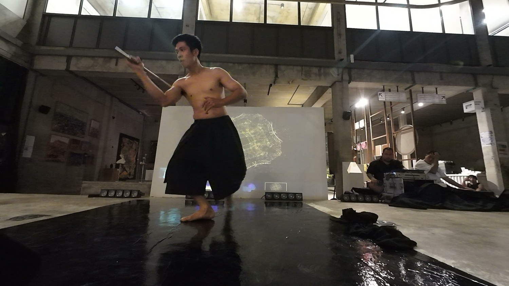
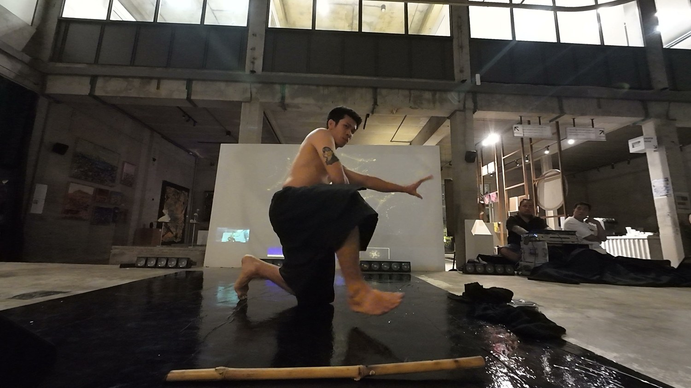
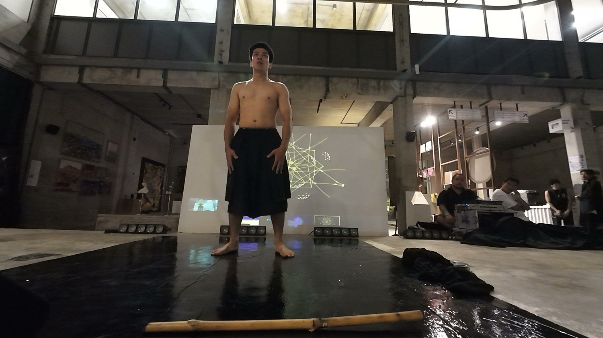
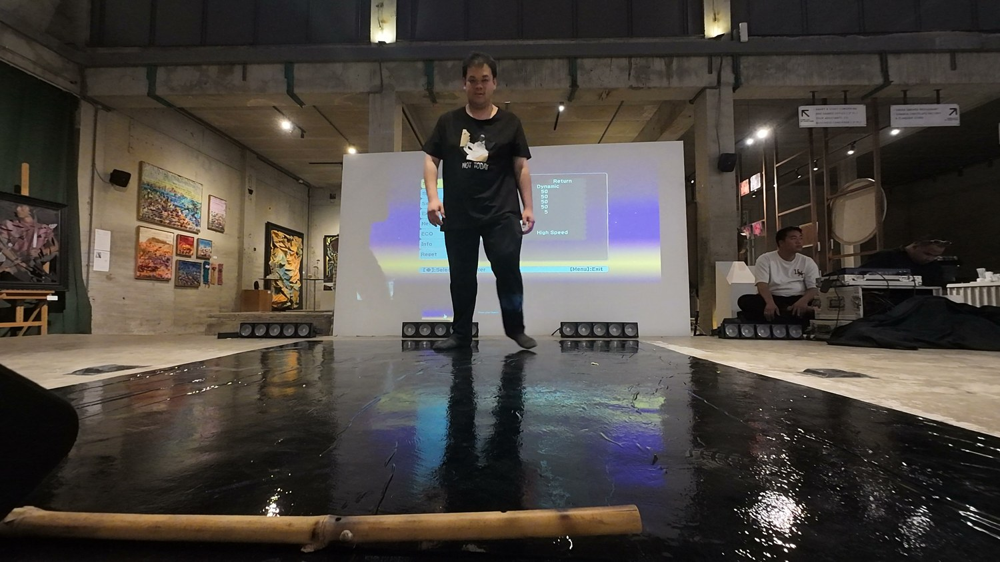

CEING เจิง brings the Lanna art of Fon Jerng into contact with real-time interactive art. The visitor's body becomes the instrument — pose and gesture drive generative visuals and spatial sound that respond to every movement.



